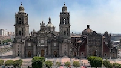

Shirley Anahi Rabell Magaña
About me

Hi! My name is Shirley, and I'm from Mexico City. I'm an Actuary, and right now I work as a risk analyst in a government institution. In my free time, I love making amigurumis (cute crochet dolls), watching Korean series, reading, and, of course, enjoying Mexican food (tacos, pambazos, pozole, panuchos they're the best ❤️). I'm also studying Software Development at BYU Pathway, and I'm super excited for this term. Can't wait to learn improve cool web pages 🤩
Mexico City
Mexico City is a lively capital full of history, culture, and flavor. Visitors can explore the ruins of the ancient Aztec city Tenochtitlan, stroll through the colonial streets of the Historic Center, and admire landmarks like the Zócalo, Palacio de Bellas Artes, and Chapultepec Castle. The city is also famous for its colorful neighborhoods like Coyoacán, Roma, and Condesa, floating gardens in Xochimilco, world-class museums, and of course, its delicious street food and traditional Mexican cuisine 🫰🏼.